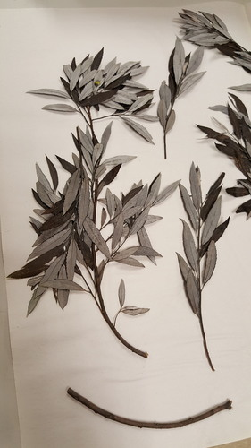
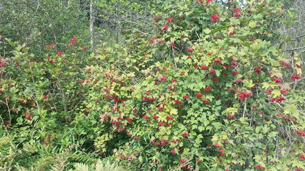
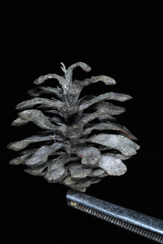
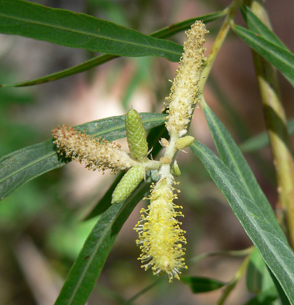
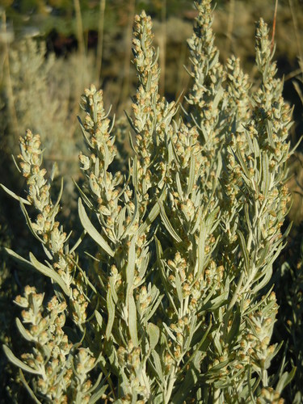

Hedge
What the plant does, from the tags the catalogue records against it.
21 plants
Alder-leaved BuckthornEndotropis alnifolia Matt Lavin, some rights reserved (CC BY)") Big SagebrushArtemisia tridentata
Big SagebrushArtemisia tridentata Eugene Popov, some rights reserved (CC BY), uploaded by Eugene Popov") Birch-leaved SpireaSpiraea betulifoliaBlue ClematisClematis occidentalis
Birch-leaved SpireaSpiraea betulifoliaBlue ClematisClematis occidentalis Nolan Exe, some rights reserved (CC BY), uploaded by Nolan Exe") Brittle Prickly-pearOpuntia fragilis
Brittle Prickly-pearOpuntia fragilis Caleb Catto, some rights reserved (CC BY), uploaded by Caleb Catto") Douglas MapleAcer glabrum
Douglas MapleAcer glabrum Catherine C. Galley, some rights reserved (CC BY), uploaded by Catherine C. Galley") Fragrant SumacRhus aromatica
Fragrant SumacRhus aromatica Matt Lavin, some rights reserved (CC BY)") Giant Wild RyeLeymus cinereusGreen AlderAlnus alnobetula
Giant Wild RyeLeymus cinereusGreen AlderAlnus alnobetula Matt Lavin, some rights reserved (CC BY-SA)") RabbitbrushEricameria nauseosa
RabbitbrushEricameria nauseosa Harvey Barrison, some rights reserved (CC BY-SA)") Sandbar WillowSalix interiorShort-capsuled WillowSalix brachycarpa
Sandbar WillowSalix interiorShort-capsuled WillowSalix brachycarpa Hladac, some rights reserved (CC BY-SA)") Thinleaf AlderAlnus incanaWild Black CurrantRibes americanum
Thinleaf AlderAlnus incanaWild Black CurrantRibes americanum WinterfatKrascheninnikovia lanata
WinterfatKrascheninnikovia lanata Don Loarie, some rights reserved (CC BY), uploaded by Don Loarie") Woods' RoseRosa woodsii
Woods' RoseRosa woodsii

Basket WillowSalix petiolarisBig SagebrushArtemisia tridentataBirch-leaved SpireaSpiraea betulifoliaBlue ClematisClematis occidentalisBrittle Prickly-pearOpuntia fragilisDouglas MapleAcer glabrumFragrant SumacRhus aromaticaGiant Wild RyeLeymus cinereusGreen AlderAlnus alnobetula
Highbush CranberryViburnum opulus
Jack PinePinus banksiana
Narrow-leaf WillowSalix exiguaRabbitbrushEricameria nauseosaSandbar WillowSalix interiorShort-capsuled WillowSalix brachycarpa
Silver SagebrushArtemisia canaThinleaf AlderAlnus incanaWild Black CurrantRibes americanumWinterfatKrascheninnikovia lanataWoods' RoseRosa woodsii